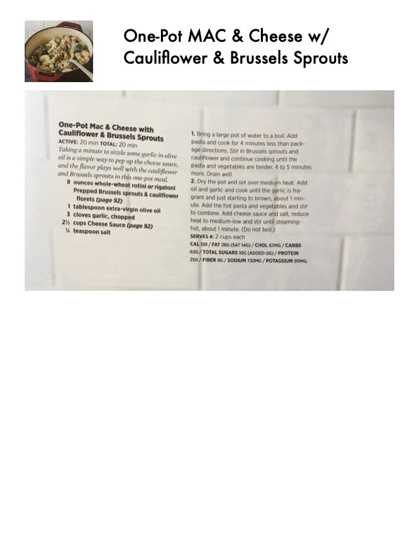

One-Pot Mac & Cheese with Cauliflower & Brussels Sprouts

Original cookbook page 68
Taking a minute to sizzle some garlic in olive oil is a simple way to pep up the cheese sauce, and the flavor plays well with the cauliflower and Brussels sprouts in this one-pot meal.
Total: 20 min
Ingredients
- 8 ounces whole-wheat rotini or rigatoni
- Prepped Brussels sprouts & cauliflower florets (page 92)
- 1 tablespoon extra-virgin olive oil
- 3 cloves garlic, chopped
- 2½ cups Cheese Sauce (page 92)
- ¼ teaspoon salt
Instructions
- Bring a large pot of water to a boil. Add pasta and cook for 4 minutes less than package directions. Stir in Brussels sprouts and cauliflower and continue cooking until the pasta and vegetables are tender, 4 to 5 minutes more. Drain well.
- Dry the pot and set over medium heat. Add oil and garlic and cook until the garlic is fragrant and just starting to brown, about 1 minute. Add the hot pasta and vegetables and stir to combine. Add cheese sauce and salt, reduce heat to medium-low and stir until steaming-hot, about 1 minute. (Do not boil.)
Recipe #68 from collection